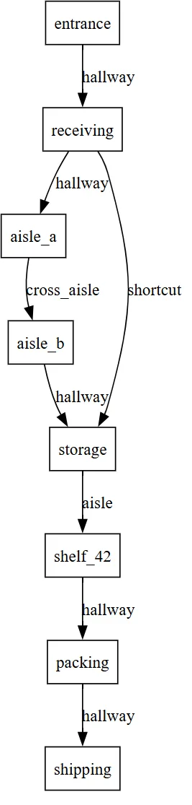

Intelligence in Motion: Graph Planning in Softanza
Softanza's Graph Module already gives you powerful tools for representing connected systems. With stzGraph, you model networks of nodes and edges. With stzDiagram, you visualize relationships. stzWorkflow captures process flows, stzOrgChart maps hierarchies, stzKnowledgeGraph encodes semantic relationships. These classes help you build the structure of your problem space.
by Mansour Ayouni · in the repository since 2025-12-28 · tutorial · area Diagramming & graphs

When Your Code Needs to Think About Routes
Introduction: From Structure to Strategy
But structure alone doesn't make decisions. Once you have a graph—whether it's a warehouse layout, a workflow diagram, or a knowledge network—the next question emerges: How do I navigate it optimally?
This is where stzGraphPlanner enters. It transforms your static graphs into decision spaces. You don't just have a network—you have a reasoning partner that finds optimal paths, explains choices, compares strategies, learns from history, and filters by constraints. Where other graph classes answer "what is the structure?", stzGraphPlanner answers "what should I do?"
Plans Are More Than Paths
A plan in stzGraphPlanner is not just a route—it is a measurable decision artifact. Every plan carries structured attributes: total cost, number of steps, and domain-specific metrics you define (energy, risk, time, reliability, score). These attributes are computed during planning and remain attached to the plan object for its entire lifecycle.
This means plans can be inspected, compared, ranked, filtered, and reused without re-executing the graph traversal. A plan behaves like a record of reasoning: what was chosen, how expensive it was, and why it scored the way it did.
The Question That Makes It Real
You're building a warehouse management system. Using stzGraph, you've modeled the facility—loading docks, aisles, storage zones, and shelves as nodes; corridors as edges with distance and congestion properties. The structure is clear.
Now a robot needs to move from loading dock to shelf 42. Dozens of paths exist through your graph. Some are shorter. Some avoid congestion. Some use less energy.
How do you make this decision?
Traditional answer: Implement complex pathfinding algorithms. Manage data structures. Debug for weeks.
Softanza answer: Describe what you want. The planner figures out how.
To see it by code, let's design the warehouse graph object first:
oGraph = new stzGraph("warehouse")
oGraph {
# Node structure of the warehaouse
AddNodes([ "entrance", "receiving", "aisle_a", "aisle_b", "storage", "shelf_42", "packing", "shipping")
# The "normal" route through aisles along with a distance tag
AddEdgeXTT("entrance", "receiving", "hallway", [ :distance = 10 ])
AddEdgeXTT("receiving", "aisle_a", "hallway", [ :distance = 15 ])
AddEdgeXTT("aisle_a", "aisle_b", "cross_aisle", [ :distance = 12])
AddEdgeXTT("aisle_b", "storage", "hallway", [ :distance = 10 ])
AddEdgeXTT("storage", "shelf_42", "aisle", [ :distance = 10 ])
AddEdgeXTT("shelf_42", "packing", "hallway", [ :distance = 15 ])
AddEdgeXTT("packing", "shipping", "hallway", [ :distance = 12 ])
# The SHORTCUT that warehouse workers know about (and that our planner should find)!
AddEdgeXTT("receiving", "storage", "shortcut", [ :distance = 25 ])
# Get a visual representation of the graph (will fire your borwser or any svg default viewer)
View()
}illustration
When View() is executed, Softanza translates this description into a visual graph that mirrors the structure you just declared. Every node becomes a location box. Every edge becomes a corridor. The diagram is not decorative—it is a faithful projection of your model.
The visual graph you get is the following (note how the shortcut edge creates a direct link from receiving bay to cold storage, bypassing aisle_a and aisle_b):
From the diagram alone, a human can suspect that the shortcut might be advantageous. But the fact that a direct link exists does not necessarily mean it is shorter than the two-step route through aisle_a and aisle_b. The planner must compare the sum of distances on the two-step path with the distance of the shortcut, then decide objectively which route is optimal.
To check that, let's do our planning staff by creating a stzGraphPlanner object based on the oGraph warehouse object we just designed:
oPlanner = new stzGraphPlanner(oGraph)
oPlanner {
// Describing our plan
AddPlan("warehouse_route")
Walk(:From = "entrance", :To = "shelf_42")
Minimizing("distance") # The "distance" tag we attached as a metadata to the grpah edges will define cost
// Executuing the plan (internal optimisations are made to find the optimal route)
Execute()
// Now see the results : first what route has been selected by the planner
? Route()
#--> [ "entrance", "receiving", "storage", "shelf_42" ]
// What is the cost of that route (in terms of "distance")
? Cost()
#--> 45
}illustration
We can inspect how the planner reached the selected route while minimizing "distance" by using the Explain() method:
? @@NL( Explain() )
And so we get:
[ [ "plan", "warehouse_route" ], [ "actions", [ [ [ "from", "entrance" ], [ "to", "receiving" ], [ "cost", 10 ] ], [ [ "from", "receiving" ], [ "to", "storage" ], [ "cost", 25 ] ], [ [ "from", "storage" ], [ "to", "shelf_42" ], [ "cost", 10 ] ] ] ], [ "total_cost", 45 ], [ "route", [ "entrance", "receiving", "storage", "shelf_42" ] ], [ "steps", 3 ] ]
The output shows that the planner optimized the route in three steps: first from "entrance" to "receiving" (cost 10), then from "receiving" to "storage" (cost 25), and finally from "storage" to "shelf_42" (cost 10), resulting in a total distance of 10 + 25 + 10 = 45, and therefore selecting the route [ "entrance", "receiving", "storage", "shelf_42" ].
Now, we can ask the planner about the alternative routes it did not select by calling the Alternatives() method:
? @@NL( Alternatives() )
And so we get:
[ [ "plan", "warehouse_route" ], [ "decision_points", [ [ [ "node", "receiving" ], [ "chosen", "aisle_a" ], [ "total_options", 2 ] ] ] ] ]
The output tells us that at each node with multiple neighbors (in our case, only at the "receiving" node), the planner had two possible options—as shown in the visual graph above: either going right through the direct shortcut edge, or alternatively going left through the "aisle_a" node. This alternative path appears in the output precisely because it reports the route that was considered but not selected.
Three lines to plan. Three lines to understand. No algorithm knowledge required. Hundreds of lines of complex optimization and pathfinding code avoided. The robot finds its way, and you can go further by asking: Why this route? How does the selected route compare to its alternatives? How does it compare to yesterday? And many more.
This is stzGraphPlanner—where graph structure meets strategic intelligence.
The Journey Ahead
This article explores graph planning through three fundamental questions:
How do we find optimal paths? We'll see how to express what matters—whether minimizing distance, avoiding danger, or balancing multiple criteria—and let the planner discover the best routes automatically.
How do we understand our choices? We'll examine what happens after finding a path: explaining costs, comparing alternatives, and understanding why one route was chosen over another.
How do we plan smarter? We'll discover advanced capabilities: comparing multiple strategies at once, learning from past executions, and filtering solutions by real-world constraints.
The progression is deliberate: first finding paths, then understanding them, finally mastering complex planning scenarios. Each capability builds on the previous, moving from single-route optimization to sophisticated multi-criteria decision support.
The concepts may be subtle, but the code remains simple. By the end, you'll see graph planning not as implementing algorithms, but as having a reasoning partner for navigating complex networks.
Part One: The Essence of Planning
What Makes Planning Different from Search
When you search, you explore until you find something. When you plan, you reason about the best path before taking a step. The difference is profound.
Let's start with the fundamental act, taking the warehase example we made above as a background: getting from point A to point B. You've built a graph representing your warehouse layout—nodes are locations, edges are paths. Now you want to navigate it:
oPlanner = new stzGraphPlanner(oGraph)
oPlanner {
AddPlan("warehouse_route")
Walk(:From = "entrance", :To = "shelf_42")
Minimizing("distance")
Execute()
}illustration
Three things just happened that matter:
First, you expressed intent ("minimize distance"), not implementation ("use A* algorithm with Euclidean heuristic"). The planner chose the right algorithm automatically.
Second, the result isn't just a path—it's a plan object you can interrogate:
? Cost() // How expensive was it? ? Route() // What's the route? ? Explain() // Why this route?
illustration
Third, you got transparency. When the plan returns cost: 45 and route entrance → receiving → storage → shelf_42, you can ask why.
The Intelligence: Discovering Hidden Patterns
Your warehouse has a shortcut—a corridor that bypasses two aisles. But it's not necessary obvious from just looking at the graph. You have:
- Long route: entrance → receiving → aisle_a → aisle_b → storage → shelf_42 (distance: 57)
- Hidden shortcut: entrance → receiving → storage → shelf_42 (distance: 45)
You don't tell the planner about the shortcut. You just say "minimize distance." The planner discovers the shortcut by exploring intelligently. It uses smart search algorithms (like A*—a pathfinding algorithm that estimates which direction looks most promising) but you never had to implement them.
Principle: Planning is pattern discovery, not path following.
Simulation Before Execution
Planning in Softanza is fundamentally non-destructive. Evaluating a plan does not mean executing it in the real world. The planner simulates outcomes, computes costs, and explores alternatives entirely in memory.
This allows you make as many plans as you need and ask powerful questions safely:
- What would happen if we chose this strategy?
- How this plan performed across time?
- How sensitive is this decision to cost changes?
Only after understanding the decision space do you choose whether—and how—to act.
Part Two: When Destination Becomes Condition
The Paradigm Shift: Goal-Based Thinking
Sometimes you don't know where you want to go. You know what you're looking for.
Imagine a game character needing treasure—any treasure worth at least 1000 gold. You could hardcode "go to the dungeon." But what if game state changes?
Goal-based planning thinks differently: Let's start by design the game world as a stzGraph object...
oGraph = new stzGraph("rpg_world")
oGraph {
AddNodeXTT("village", "Starting Village", [
:gold = 0, :hasKey = FALSE, :danger = 0
])
AddNodeXTT("forest", "Dark Forest", [
:gold = 500, :hasKey = FALSE, :danger = 3
])
AddNodeXTT("cave", "Mysterious Cave", [
:gold = 800, :hasKey = TRUE, :danger = 5
])
AddNodeXTT("dungeon", "Ancient Dungeon", [
:gold = 1500, # This qualifies!
:hasKey = FALSE, :danger = 8
])
AddNodeXTT("castle", "Abandoned Castle", [
:gold = 800, # Less than 1000
:hasKey = FALSE, :danger = 6
])
AddEdgeXTT("village", "forest", "path", [:danger = 2])
AddEdgeXTT("forest", "cave", "path", [:danger = 3])
AddEdgeXTT("forest", "dungeon", "path", [:danger = 7])
AddEdgeXTT("village", "castle", "path", [:danger = 5])
}illustration
Then, let's make our planning staff inside a stzGraphPlanner object:
oPlanner = new stzGraphPlanner(oGraph)
oPlanner {
AddPlan("rpg_plan")
Walk(
:FromNode = "village",
:UntilYouReachF = func(node) {
return node[:properties][:gold] >= 1000
}
)
Minimizing("danger")
Execute()
? Cost()
#--> 9
? @@( Route() )
#--> [ "village", "forest", "dungeon" ]
? @@NL( Actions() )
#--> [
# [ [ "from", "village" ], [ "to", "forest" ], [ "cost", 2 ] ],
# [ [ "from", "forest" ], [ "to", "dungeon" ], [ "cost", 7 ] ]
# ]
}illustration
You didn't specify a destination node. You specified a destination condition. The planner:
- Explores from your starting point
- Evaluates each node: "Does this satisfy the goal?"
- Returns optimal path to first qualifying node
- Still respects optimization criteria
Result: village → forest → dungeon (cost: 9 danger points). The dungeon was nearest location with sufficient treasure, reached via the safest route.
This pattern appears everywhere: - Logistics: "Find warehouse with 500+ units, closest to customer" - Healthcare: "Route to any hospital with cardiac capability, fastest response" - Manufacturing: "Find production line where quality > 95%, with capacity"
You're not routing to a place. You're routing to a state of the world that satisfies your needs.
Part Three: The Transparency Revolution
When Plans Explain Themselves
Most AI systems are black boxes. You get an answer but no understanding. Softanza believes plans should be conversational.
Let's start as ususal with a stzGraph object:
oGraph = new stzGraph("complex_route")
oGraph {
AddNode("start")
AddNode("point_a")
AddNode("point_b")
AddNode("end")
AddEdgeXTT("start", "point_a", "road", [:distance = 10, :traffic = 2])
AddEdgeXTT("point_a", "point_b", "road", [:distance = 15, :traffic = 8])
AddEdgeXTT("point_b", "end", "road", [:distance = 5, :traffic = 1])
}illustration
Now we do our planning mission:
oPlanner = new stzGraphPlanner(oGraph)
oPlanner {
AddPlan("route_analysis")
Walk(:From = "start", :To = "end")
Minimize("distance")
Minimize("traffic")
Execute()
? Rout()
? Cost()
}
You've generated a delivery route, but the cost seems high: let's check th cost structure genertae from the plan execution: We write...
? @@NL( CostBreakdown() )
and so we get:
#--> [
# [
# [ "step", 1 ], [ "from", "start" ], [ "to", "point_a" ],
# [ "criteria", [
# [ [ "property", "distance" ], [ "value", 10 ],
# [ "weight", 1 ], [ "direction", "minimize" ],
# [ "contribution", 10 ] ],
# [ [ "property", "traffic" ], [ "value", 2 ],
# [ "weight", 1 ], [ "direction", "minimize" ],
# [ "contribution", 2 ] ]
# ]],
# [ [ "total", 12 ] ]
# ],
# [
# [ "step", 2 ], [ "from", "point_a" ], [ "to", "point_b" ],
# [ "criteria", [
# [ [ "property", "distance" ], [ "value", 15 ],
# [ "contribution", 15 ] ],
# [ [ "property", "traffic" ], [ "value", 8 ],
# [ "contribution", 8 ] ]
# ]],
# [ [ "total", 23 ] ]
# ],
# [
# [ "step", 3 ], [ "from", "point_b" ], [ "to", "end" ],
# [ "criteria", [
# [ [ "property", "distance" ], [ "value", 5 ],
# [ "contribution", 5 ] ],
# [ [ "property", "traffic" ], [ "value", 1 ],
# [ "contribution", 1 ] ]
# ]],
# [ [ "total", 6 ] ]
# ]
# ]
}
the detailed output show that the cost has been accumulated from two steps:
Step 1: warehouse → suburb_a • distance: 12 × 1 (minimize) = 12 • traffic: 2 × 1 (minimize) = 2 Total: 14 Step 2: suburb_a → downtown • distance: 15 × 1 (minimize) = 15 • traffic: 8 × 1 (minimize) = 8 Total: 23
Now you see it: the second leg has heavy traffic (8 points). Not a mystery—just math, explained.
The "Why" Conversation
Want more context?
? ExplainWhy("route")illustration
This route was selected because: • Total cost: 37 • Explored 8 nodes to find it • Optimized for: minimize distance, minimize traffic
And to understand alternatives:
? ExplainAlternatives()
illustration
Key decisions made: • At 'warehouse', chose 'suburb_a' (2 options available) • At 'suburb_a', chose 'downtown' (3 options available)
Introspection by Design
Every object produced by stzGraphPlanner is introspectable. Plans expose their paths, costs, steps, rankings, and comparison results through explicit queries—not logs or debug output.
This is intentional. Instead of hiding intelligence inside algorithms, Softanza surfaces it as structured knowledge you can explore, explain, and audit. Planning becomes something you reason about, not something you merely run.
In regulated industries (healthcare, finance, transportation), you may be legally required to explain automated decisions. With stzGraphPlanner, explanation is built in. The plan knows why it was created.
Part Four: Strategy as Language
The Profile System: Named Intentions
You keep optimizing for the same combinations. Fast deliveries minimize time and fuel. Safe routes minimize danger and maximize cover. Budget operations minimize cost and maintenance.
Instead of rewriting criteria every time, profiles encode strategy as named concepts:
// Instead of this every time:
Minimizing("time").Minimizing("fuel").WithWeight(0.6, 0.4)
// Just say this:
Using(:fastest)illustration
Six profiles come standard: :fastest, :safest, :cheapest, :shortest, :balanced, :efficient. Each encodes a common optimization strategy.
Fluent Planning Mirrors Human Reasoning
The planner's fluent interface is not syntactic sugar—it mirrors how humans think about decisions. You start with intent, add constraints, explore alternatives, and only then evaluate outcomes.
Each method returns the planner itself, allowing plans to be constructed progressively and read top-to-bottom like a sentence. The code becomes a narrative of reasoning, not a sequence of commands.
In Softanza, fluency is about cognitive alignment between human thought and executable logic.
Profiles in Action
An ambulance dispatch system:
// During low traffic: prioritize speed
AddPlan("rush_hour")
Walk(:From = "hospital", :To = "emergency")
Using(:fastest)
Execute()
// During peak hours: prioritize reliability
AddPlan("reliable")
Walk(:From = "hospital", :To = "emergency")
Using(:safest) // Avoids unpredictable routes
Execute()illustration
Same graph, same endpoints—different strategies. Profiles make strategy part of the domain language, not buried in code.
Here's a complete example showing profile usage:
oGraph = new stzGraph("delivery_network")
oGraph {
AddNodeXTT("warehouse", "Main Warehouse", [:x = 0, :y = 0])
AddNodeXTT("suburb_a", "Suburb A", [:x = 10, :y = 5])
AddNodeXTT("suburb_b", "Suburb B", [:x = 15, :y = 10])
AddNodeXTT("customer", "Customer Location", [:x = 25, :y = 20])
AddEdgeXTT("warehouse", "suburb_a", "highway", [
:distance = 12, :time = 25, :cost = 10
])
AddEdgeXTT("suburb_a", "customer", "road", [
:distance = 18, :time = 20, :cost = 15
])
AddEdgeXTT("warehouse", "suburb_b", "backroad", [
:distance = 20, :time = 20, :cost = 8
])
AddEdgeXTT("suburb_b", "customer", "highway", [
:distance = 15, :time = 15, :cost = 12
])
}
oPlanner = new stzGraphPlanner(oGraph)
oPlanner {
AddPlan("fast_delivery")
Walk(:From = "warehouse", :To = "customer")
Using(:fastest)
Execute()
? Cost()
#--> 35
? @@( Route() )
#--> [ "warehouse", "suburb_b", "customer" ]
}illustration
Part Five: The Comparison Problem
When One Solution Isn't Enough
Real decisions involve trade-offs. Do we take the fast route or safe one? Cheap production or high-quality?
Traditional systems give you one answer. Intelligent decision-making requires understanding alternatives.
Comparing Plans
You've planned two delivery routes—one for speed, one for fuel economy:
AddPlan("fast")
Walk(:From = "warehouse", :To = "customer")
Using(:fastest)
Execute()
AddPlan("economical")
Walk(:From = "warehouse", :To = "customer")
Using(:cheapest)
Execute()
SetCurrentPlan("fast")
? ExplainDifference("economical")illustration
Output:
PATH ANALYSIS: Plans use DIFFERENT routes Plan 1: [ "warehouse", "highway", "downtown", "customer" ] Plan 2: [ "warehouse", "local_road", "suburb", "customer" ] Paths diverge at step 2 COST ANALYSIS: Plan 1 cost: 25 (time) Plan 2 cost: 80 (fuel cost) ✓ Plan 1 is faster, Plan 2 is cheaper
Here's the complete example:
oGraph = new stzGraph("trade_off")
oGraph {
AddNode("factory")
AddNode("process_premium")
AddNode("process_standard")
AddNode("shipping")
AddEdgeXTT("factory", "process_premium", "premium", [
:cost = 100, :time = 5, :quality = 10
])
AddEdgeXTT("process_premium", "shipping", "finish", [
:cost = 50, :time = 3, :quality = 10
])
AddEdgeXTT("factory", "process_standard", "standard", [
:cost = 30, :time = 15, :quality = 7
])
AddEdgeXTT("process_standard", "shipping", "finish", [
:cost = 20, :time = 10, :quality = 7
])
}
oPlanner = new stzGraphPlanner(oGraph)
oPlanner {
AddPlan("budget")
Walk(:From = "factory", :To = "shipping")
Using(:cheapest)
Execute()
AddPlan("rush")
Walk(:From = "factory", :To = "shipping")
Using(:fastest)
Execute()
SetCurrentPlan("budget")
? @@NL( ExplainDifferenceWith("rush") )
#--> [
# [ "plan1", "budget" ],
# [ "plan2", "rush" ],
# [ "same_path", FALSE ],
# [ "route1", [ "factory", "process_standard", "shipping" ] ],
# [ "route2", [ "factory", "process_premium", "shipping" ] ],
# [ "diverge_at_step", 2 ],
# [ "cost1", 40.40 ],
# [ "cost2", 6.20 ],
# [ "cheaper", "rush" ]
# ]
}illustration
Trade-off Analysis
? ShowTradeoffs("economical")illustration
CRITERION COMPARISON: Cost: Plan 2 wins (saves $35) Path Length: Tie RECOMMENDATION: → Choose Plan 1 for time-sensitive deliveries → Choose Plan 2 for routine deliveries
The comparison system doesn't make decisions for you. It structures the decision so you can judge intelligently.
Complete trade-off example:
SetCurrentPlan("budget")
? @@NL( ExplainTradeoffsAgainst("rush") )
#--> [
# [ "plan1", "budget" ],
# [ "plan2", "rush" ],
# [ "cost_winner", "rush" ],
# [ "cost_savings", 34.20 ],
# [ "length_winner", "tie" ],
# [ "length_difference", 0 ],
# [ "recommendation", "Choose rush for cost optimization" ]
# ]
? WhichIsCheaper("rush")
#--> rush
? CostSaving("rush")
#--> 34.20illustration
Part Six: Multi-Plan Intelligence
Comparing Many Strategies Simultaneously
Real scenarios have multiple alternatives. Compare them all at once:
// Create 4 different strategies
AddPlan("ultra_fast")
Walk(:From = "warehouse", :To = "destination")
Using(:fastest)
Execute()
AddPlan("budget")
Using(:cheapest)
Execute()
AddPlan("short_distance")
Using(:shortest)
Execute()
AddPlan("balanced")
Using(:balanced)
Execute()
// Compare all 4
oMulti = CompareMultiple(["ultra_fast", "budget", "short_distance", "balanced"])illustration
Ranking as Structured Data
When multiple plans are compared, stzGraphPlanner does not produce text—it produces data. Ranking tables are returned as structured collections that can be consumed programmatically by dashboards, reports, UI components, or analytics pipelines.
This distinction matters. A ranking is not just something to read—it is something to act upon. The same ranking table can power a console display, a decision widget, an automated rule engine, or a visual comparison chart without transformation.
Get rankings:
? oMulti.RankBy("cost")
//→ [ ["budget", 25], ["balanced", 45], ["short_distance", 50], ["ultra_fast", 90] ]
oMulti.ShowRankingTable()illustration
Output:
=== PLAN RANKING TABLE === Rank | Plan Name | Cost | Steps -----+----------------+-------+------ 1 | budget | 25 | 3 2 | balanced | 45 | 3 3 | short_distance | 50 | 3 4 | ultra_fast | 90 | 3
Quick Decision Support
? oMulti.BestBy("cost")
//→ "budget"
? oMulti.WorstBy("cost")
//→ "ultra_fast"illustration
Complete multi-plan comparison example:
oGraph = new stzGraph("multi_strategy")
oGraph {
AddNode("warehouse")
AddNode("route_highway")
AddNode("route_backroad")
AddNode("route_express")
AddNode("destination")
AddEdgeXTT("warehouse", "route_highway", "path", [
:time = 10, :cost = 50, :distance = 20
])
AddEdgeXTT("route_highway", "destination", "path", [
:time = 8, :cost = 40, :distance = 15
])
AddEdgeXTT("warehouse", "route_backroad", "path", [
:time = 25, :cost = 15, :distance = 30
])
AddEdgeXTT("route_backroad", "destination", "path", [
:time = 20, :cost = 10, :distance = 25
])
AddEdgeXTT("warehouse", "route_express", "path", [
:time = 5, :cost = 80, :distance = 18
])
AddEdgeXTT("route_express", "destination", "path", [
:time = 4, :cost = 60, :distance = 12
])
}
oPlanner = new stzGraphPlanner(oGraph)
oPlanner {
AddPlan("ultra_fast")
Walk(:From = "warehouse", :To = "destination")
Using(:fastest)
Execute()
AddPlan("budget")
Walk(:From = "warehouse", :To = "destination")
Using(:cheapest)
Execute()
AddPlan("short_distance")
Walk(:From = "warehouse", :To = "destination")
Using(:shortest)
Execute()
AddPlan("balanced")
Walk(:From = "warehouse", :To = "destination")
Using(:balanced)
Execute()
oMulti = CompareManyQ(["ultra_fast", "budget", "short_distance", "balanced"])
? @@NL( oMulti.CompareAll() )
#--> [
# [ "total_plans", 4 ],
# [ "plans", [
# [ [ "plan", "ultra_fast" ], [ "cost", 15.30 ], [ "steps", 3 ],
# [ "route", [ "warehouse", "route_express", "destination" ] ] ],
# [ [ "plan", "budget" ], [ "cost", 31 ], [ "steps", 3 ],
# [ "route", [ "warehouse", "route_backroad", "destination" ] ] ],
# [ [ "plan", "short_distance" ], [ "cost", 30 ], [ "steps", 3 ],
# [ "route", [ "warehouse", "route_express", "destination" ] ] ],
# [ [ "plan", "balanced" ], [ "cost", 42 ], [ "steps", 3 ],
# [ "route", [ "warehouse", "route_backroad", "destination" ] ] ]
# ]],
# [ "best_by_cost", "ultra_fast" ],
# [ "best_by_steps", "ultra_fast" ]
# ]
? @@NL( oMulti.RankBy("cost") )
#--> [
# [ "ultra_fast", 15.30 ],
# [ "short_distance", 30 ],
# [ "budget", 31 ],
# [ "balanced", 42 ]
# ]
oMulti.ShowRankingTable()
#--> Displays formatted table
? oMulti.BestBy("cost")
#--> ultra_fast
? oMulti.WorstBy("cost")
#--> balanced
}illustration
Pattern: When you have many options, ranking tables and quick queries help identify the right strategy for your context.
Part Seven: Learning from History
Historical Comparison: Plans Remember
Every plan execution is stored in history. Compare current performance against past:
// Execute multiple delivery runs
for i = 1 to 5
AddPlan("delivery_" + i)
Walk(:From = "depot", :To = "customer")
Minimize("cost")
Execute()
next
// Analyze performance
? HistoryCount()
//→ 5
? HistoricalAverage("cost")
//→ Shows average cost across all 5 runs
? BestHistoricalPlan("cost")
//→ "delivery_3" (returns best performing plan)illustration
Is This an Improvement?
SetCurrentPlan("delivery_5")
oHistComp = CompareWithHistory()
? oHistComp.Explain()illustration
Output:
=== HISTORICAL COMPARISON === Current Plan: delivery_5 Cost: 30 Steps: 3 Historical Average: Cost: 35 Steps: 3 ✓ Current plan is 14.3% better than average Best historical plan: delivery_3
Methods:
? oHistComp.IsImprovement() //→ TRUE ? oHistComp.ImprovementPercentage() //→ 14.3
illustration
Complete historical tracking example:
oGraph = new stzGraph("evolving_network")
oGraph {
AddNode("start")
AddNode("mid1")
AddNode("mid2")
AddNode("end")
AddEdgeXTT("start", "mid1", "path", [:cost = 10])
AddEdgeXTT("start", "mid2", "path", [:cost = 15])
AddEdgeXTT("mid1", "end", "path", [:cost = 20])
AddEdgeXTT("mid2", "end", "path", [:cost = 8])
}
oPlanner = new stzGraphPlanner(oGraph)
oPlanner {
// Attempt 1: Initial optimal route
AddPlan("attempt1")
Walk(:From = "start", :To = "end")
Minimize("cost")
Execute()
? Cost()
#--> 23
? @@( Route() )
#--> [ "start", "mid2", "end" ]
// Network degrades - mid2 route congested
@oGraph.SetEdgeProperty("mid2", "end", "cost", 25)
// Attempt 2: Same plan, worse network
AddPlan("attempt2")
Walk(:From = "start", :To = "end")
Minimize("cost")
Execute()
? Cost()
#--> 30
? @@( Route() )
#--> [ "start", "mid1", "end" ]
// Network improves - mid1 route optimized
@oGraph.SetEdgeProperty("mid1", "end", "cost", 12)
// Attempt 3: Same plan, improved network
AddPlan("attempt3")
Walk(:From = "start", :To = "end")
Minimize("cost")
Execute()
? Cost()
#--> 22
? @@( Route() )
#--> [ "start", "mid1", "end" ]
// Historical analysis
? HistoryCount()
#--> 3
? HistoricalAverage("cost")
#--> 25
? BestHistoricalPlan("cost")
#--> attempt3
// Compare current with history
SetCurrentPlan("attempt3")
oHistComp = CompareWithHistoryQ()
? @@NL( oHistComp.Explain() )
#--> [
# [ "current_plan", "attempt3" ],
# [ "cost", 22 ],
# [ "steps", 3 ],
# [ "historical_average_cost", 25 ],
# [ "historical_average_steps", 3 ],
# [ "observation", "✓ Current plan is 12% better than average" ],
# [ "best_historical_plan", "attempt3" ]
# ]
? oHistComp.IsImprovement()
#--> TRUE
? oHistComp.ImprovementPercentage()
#--> 12
}illustration
Pattern: Historical tracking transforms planning from one-off computation to continuous improvement. You learn what works.
Part Eight: Constraint-Based Filtering
Finding Plans That Meet Requirements
When you have many plans, filter by constraints:
// Create multiple route plans
AddPlan("cheap_route")
// ... execute ...
AddPlan("fast_route")
// ... execute ...
AddPlan("safe_route")
// ... execute ...
// Filter: cost <= 50
oFilter = FilterPlans([:maxCost = 50])
? oFilter.Count()
//→ 2
oFilter.Show()illustration
Avoiding Nodes
// Plans that avoid dangerous downtown area
oFilter = PlansAvoiding("downtown")
oFilter.Show()illustration
Requiring Waypoints
// Plans that must visit distribution center
oFilter = PlansRequiring("distribution_center")
? oFilter.Count()illustration
Tolerance-Based Filtering
// Find plans within 10% of optimal cost
oFilter = PlansWithin(10, :of = "optimal_plan")
? oFilter.Count()
//→ Shows plans that are "good enough"
? oFilter.BestBy("cost")
//→ Returns cheapest from filtered set
oFilter.ShowRankingTable()illustration
Multiple Constraints
// Complex real-world filtering
oFilter = FilterPlans([
:maxCost, 50,
:avoid, "downtown",
:maxSteps, 4
])
? "Found " + oFilter.Count() + " plans matching all constraints"illustration
Complete filtering example:
oGraph = new stzGraph("filtered_network")
oGraph {
AddNode("origin")
AddNode("cheap_route")
AddNode("expensive_route")
AddNode("medium_route")
AddNode("avoid_me")
AddNode("destination")
// Cheap: 15 total
AddEdgeXTT("origin", "cheap_route", "path", [:cost = 10])
AddEdgeXTT("cheap_route", "destination", "path", [:cost = 5])
// Expensive through avoid_me: 80 total
AddEdgeXTT("origin", "expensive_route", "path", [:cost = 50])
AddEdgeXTT("expensive_route", "avoid_me", "path", [:cost = 20])
AddEdgeXTT("avoid_me", "destination", "path", [:cost = 10])
// Medium: 35 total
AddEdgeXTT("origin", "medium_route", "path", [:cost = 20])
AddEdgeXTT("medium_route", "destination", "path", [:cost = 15])
}
oPlanner = new stzGraphPlanner(oGraph)
oPlanner {
AddPlan("plan_cheap")
Walk(:From = "origin", :To = "destination")
Minimize("cost")
Execute()
AddPlan("plan_via_avoid")
Walk(:From = "origin", :To = "avoid_me")
Minimize("cost")
Execute()
AddPlan("plan_via_medium")
Walk(:From = "origin", :To = "medium_route")
Minimize("cost")
Execute()
// Filter: cost <= 50
oFilter1 = FilterPlansQ([:maxCost = 50])
? oFilter1.Count()
#--> 2
? @@( oFilter1.Plans() )
#--> [ "plan_cheap", "plan_via_medium" ]
? @@NL( oFilter1.PlansXT() )
#--> [
# [ "constrains_applied", [ [ "maxcost", 50 ] ] ],
# [ "plans_matching_count", 2 ],
# [ "plans_matching_details", [
# [ [ "plan", "plan_cheap" ], [ "cost", 15 ], [ "steps", 3 ],
# [ "route", [ "origin", "cheap_route", "destination" ] ] ],
# [ [ "plan", "plan_via_medium" ], [ "cost", 20 ], [ "steps", 2 ],
# [ "route", [ "origin", "medium_route" ] ] ]
# ]]
# ]
// Filter: avoid node
oFilter2 = PlansAvoidingQ("avoid_me")
? oFilter2.Count()
#--> 2
? @@( oFilter2.Plans() )
#--> [ "plan_cheap", "plan_via_medium" ]
// Filter: cost >= 20
oFilter3 = FilterPlansQ([:minCost = 20])
? oFilter3.Count()
#--> 2
? @@( oFilter3.Plans() )
#--> [ "plan_via_avoid", "plan_via_medium" ]
}illustration
Tolerance-based filtering example:
oGraph = new stzGraph("tolerance_test")
oGraph {
AddNode("base")
AddNode("option_a")
AddNode("option_b")
AddNode("option_c")
AddNode("target")
// Optimal: 40
AddEdgeXTT("base", "option_a", "path", [:cost = 40])
AddEdgeXTT("option_a", "target", "path", [:cost = 60])
// Near-optimal: 45 (12.5% worse)
AddEdgeXTT("base", "option_b", "path", [:cost = 45])
AddEdgeXTT("option_b", "target", "path", [:cost = 60])
// Suboptimal: 70 (75% worse)
AddEdgeXTT("base", "option_c", "path", [:cost = 70])
AddEdgeXTT("option_c", "target", "path", [:cost = 60])
}
oPlanner = new stzGraphPlanner(oGraph)
oPlanner {
AddPlan("optimal")
Walk(:From = "base", :To = "option_a")
Minimize("cost")
Execute()
AddPlan("near_optimal")
Walk(:From = "base", :To = "option_b")
Minimize("cost")
Execute()
AddPlan("suboptimal")
Walk(:From = "base", :To = "option_c")
Minimize("cost")
Execute()
// Filter within 15% of optimal
oFilter = PlansWithinQ(15, :of = "optimal")
? oFilter.Count()
#--> 2
? @@( oFilter.Plans() )
#--> [ "optimal", "near_optimal" ]
? oFilter.BestBy("cost")
#--> optimal
oFilter.ShowRankingTable()
#--> Displays formatted table
}illustration
Pattern: Filtering transforms "find the best" into "find the best that meets my requirements"—crucial for real-world constraints.
Part Nine: The Architecture of Intelligence
What's Happening Under the Hood
The fluent interface feels simple. Behind it:
- Smart pathfinding algorithms (like A*, which intelligently estimates distances to find optimal routes) with automatic selection based on your graph structure
- Best-first search (exploring the most promising paths first) for goal-based planning with early termination when a match is found
- Multi-criteria optimization combining multiple factors (time, cost, distance) with weighted importance
- Exploration tracking logging every decision point for later explanation
You never have to know this. The interface abstracts complexity without hiding reasoning.
The Three-Layer Design
Expression Layer: State intent
Walk(:From = "A", :To = "B").Using(:fastest)
illustration
Reasoning Layer: Algorithms work (hidden but accessible)
A* exploration, cost calculation, path reconstruction
illustration
Explanation Layer: Transparency emerges
ExplainWhy(), ExplainAlternatives(), CompareTo()
illustration
Traditional systems have layers 1 and 2. Softanza adds layer 3, transforming from "computational tool" to "reasoning partner."
Part Ten: Planning in the Wild
Real Systems, Real Decisions
Warehouse Robotics: Robots receive pick orders with varying priority and size. The planner:
- Minimizes travel time for urgent orders (:fastest)
- Minimizes energy for routine orders (:cheapest)
- Avoids congested aisles during peak hours
- Explains routing decisions to managers
Result: 30% faster picks, 20% energy savings, zero confusion.
Emergency Dispatch: 911 calls need nearest appropriate unit. The planner: - Uses goal-based search: "Find any ambulance where distance < 10 miles AND capabilities match" - Optimizes for actual response time, not just distance - Compares multiple plans: fastest vs most reliable - Provides explanation for dispatch logs (regulatory requirement)
Result: 2-minute improvement in response time. More importantly: explainable decisions.
Manufacturing Workflow: Custom orders have quality requirements, deadlines, cost constraints. The planner:
- Routes orders through production stages
- Optimizes per order (luxury: :balanced, commodity: :cheapest)
- Compares alternative workflows showing trade-offs
- Explains decisions to customers
Result: Better communication, strategic resource allocation, 15% cost reduction.
Pattern: The planner isn't replacing judgment—it's structuring decisions so humans can judge better. This is augmented intelligence.
The Softanza Advantage
Comparison with Leading Graph Planning Libraries
| Feature | Softanza | NetworkX (Python) | JGraphT (Java) | Boost Graph (C++) | igraph (Python/R) | Pathfinding.js |
|---|---|---|---|---|---|---|
| Intent-Based API | ✅ Natural language | ❌ Algorithm-centric | ❌ Class-based | ❌ Template-heavy | ❌ Function calls | ❌ Config objects |
| Built-in Explanations | ✅ Multi-level | ❌ None | ❌ None | ❌ None | ❌ None | ❌ None |
| Multi-Plan Comparison | ✅ Native support | ❌ Manual | ❌ Manual | ❌ Manual | ❌ Manual | ❌ Manual |
| Historical Tracking | ✅ Automatic | ❌ External | ❌ External | ❌ External | ❌ External | ❌ External |
| Constraint Filtering | ✅ Declarative | ⚠️ List comprehensions | ⚠️ Streams/filters | ⚠️ STL algorithms | ⚠️ Vector subset | ⚠️ Array.filter |
| Named Strategy Profiles | ✅ :fastest, :safest |
❌ Weight dicts | ❌ Builder patterns | ❌ Policy classes | ❌ Parameters | ❌ Options object |
| Goal-Based Search | ✅ First-class | ⚠️ Custom predicates | ⚠️ Interface impl | ⚠️ Visitor pattern | ⚠️ Lambda functions | ❌ Not built-in |
| Fluent Interface | ✅ Full fluency | ❌ Function chaining | ⚠️ Builder only | ❌ Separate calls | ❌ Separate calls | ⚠️ Method chaining |
| Learning Curve | Gentle | Moderate | Steep | Very steep | Moderate | Gentle |
| Target Audience | Domain experts | Data scientists | Enterprise Java | C++ experts | Researchers | Web developers |
| Explainability | Conversational | Debug prints | Logging | Debug output | Verbose mode | Console logs |
Legend: ✅ Native/Excellent | ⚠️ Possible but manual | ❌ Not available
These are excellent libraries, each powerful in its domain. NetworkX excels at graph analysis, JGraphT at enterprise reliability, Boost at performance, igraph at statistical computing, Pathfinding.js at web visualization.
Softanza's distinction: It transforms graph planning from algorithmic implementation to strategic conversation. Where others require you to construct searches, Softanza lets you express intent. Where others return paths, Softanza explains reasoning. Where others process one query, Softanza compares strategies, learns from history, and filters by constraints—all through a fluent, natural interface.
The difference isn't in the algorithms (A is A). It's in how you interact with them. Traditional libraries speak the language of computer science. Softanza speaks the language of your problem domain.
DISCLAIMER: stzGraphPlanner is a pragmatic planning library optimized for business applications, educational programming, and data analytics. Unlike academic planners focused on worst-case theoretical guarantees, we prioritize: * Explainability: Every decision has a
Why(),CostBreakdown(), andTradeoffs()explanation * Comparison: Built-in multi-plan ranking, historical analysis, and constraint filtering * Usability: Intuitive API with profiles (:fastest,:cheapest,:balanced) for common scenarios * Real-world focus: Optimized for graphs with 10-1000 nodes, not academic benchmarks For research-grade features like mutex relations or CSP integration, consider PDDL-based systems. For production planning, route optimization, and decision analytics, stzGraphPlanner delivers enterprise-ready results with minimal complexity.
Conclusion
Graph planning in Softanza isn't about mastering algorithms—it's about expressing intent and understanding outcomes. Where traditional libraries demand you construct searches, stzGraphPlanner lets you describe strategies. Where others return paths, Softanza explains reasoning, compares alternatives, learns from history, and filters by constraints.
The transformation is fundamental: from computational tool to reasoning partner. You state what matters (:fastest, :safest, "within 10%", "avoid downtown"), the planner handles how, and together you explore the decision space through conversation.
This is planning that teaches as it works, explains as it decides, and remembers as it improves. Not artificial intelligence replacing judgment—augmented intelligence structuring it.
Related reading
- Introducing stzOrgChart - The Strategic Organizational Intelligence Platform
- stzGraph — Modeling Knowledge Through Structure
- stzGraph: The Art of Connected Thinking
- Organizational Intelligence in Action
Cite
Mansour Ayouni. "Intelligence in Motion: Graph Planning in Softanza". Softanza narrations, 2025. https://mayouni.github.io/stzsite/en/narrations/stzgraphplannerdoc.html
Not run: its code touches files, the network, the clock or chance. The article is published as written; its blocks are illustrations. The code of the articles is Haro code. Where an article was written before the language took its present name, the name was changed and nothing else. Genre, area and series read from the file's name, the year from its first commit: derived, until the article carries its own header. The file on GitHub(opens in a new tab)